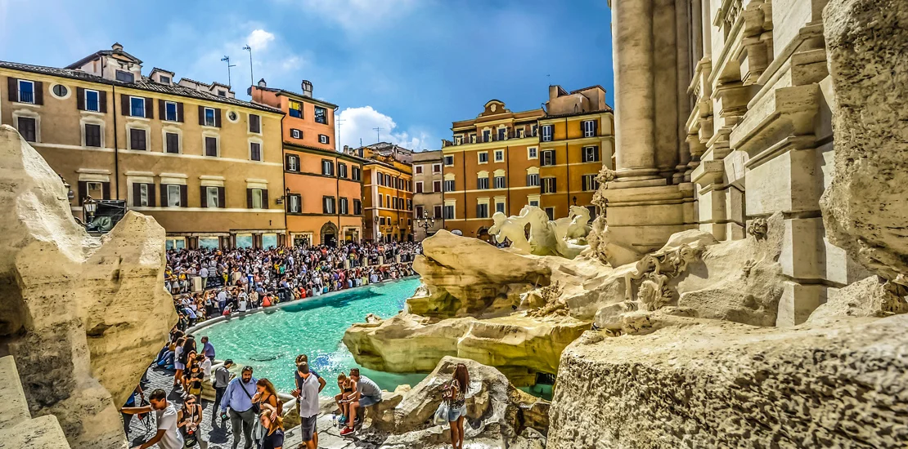
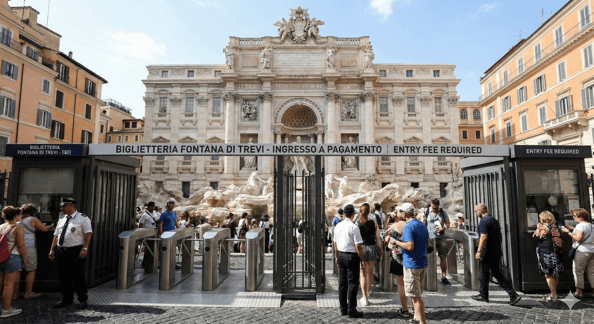
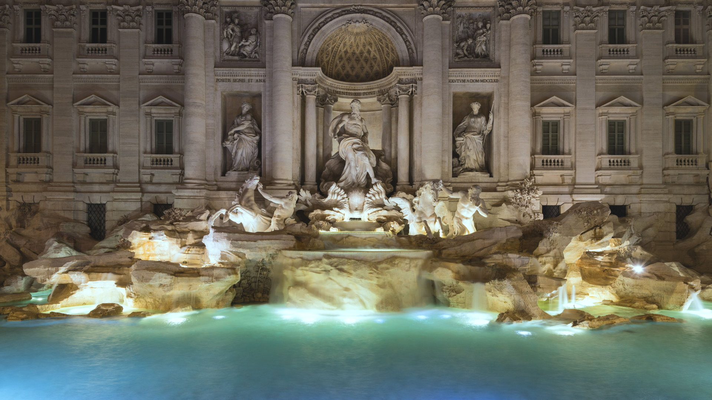

A Fontana di Trevi é a maior e mais famosa fonte barroca localizada em Roma, na Itália.
Inaugurada em 1762, ela foi projetada pelo arquiteto Nicola Salvi e concluída por Giuseppe Pannini.

O monumento impressiona por suas esculturas detalhadas que narram a história da domesticação das águas, tendo como figura central o deus Oceanus (frequentemente associado a Netuno) em uma carruagem de concha puxada por cavalos-marinhos e tritões.

A visita à icônica Fontana di Trevi em Roma exige planejamento. O acesso à praça é gratuito, mas para descer até a escadaria inferior e jogar a moeda, é cobrada uma taxa de € 2, com limite diário de público.

A arquitetura da Fontana di Trevi é considerada a obra-prima definitiva do Barroco tardio romano. Ela não é apenas uma fonte, mas uma fachada monumental integrada diretamente ao fundo do Palazzo Poli.